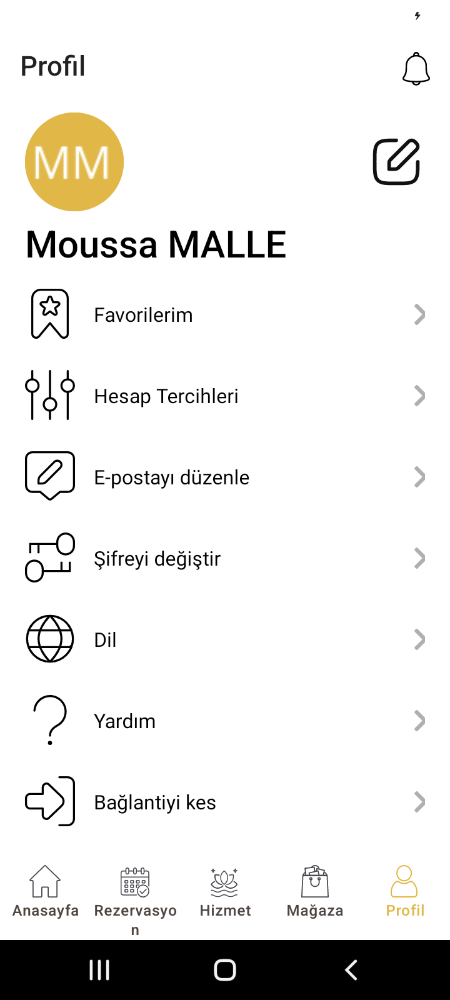
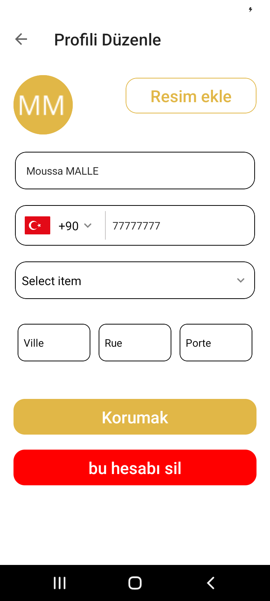
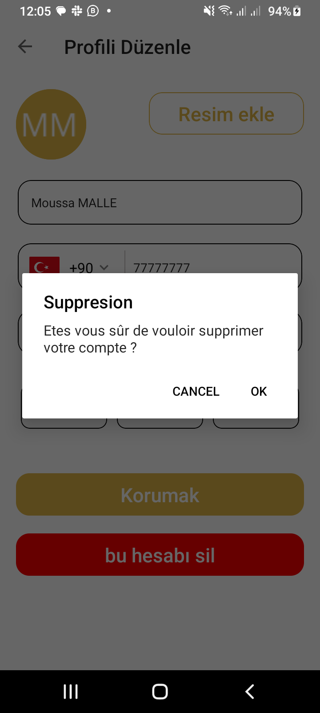

Supprimer votre compte dans l'application MKParis Concept
Voici comment supprimer votre compte dans notre application mobile :
- Ouvrez l'application MKParis Concept sur votre appareil.
- Accédez à votre profil ou à vos paramètres.
-
Recherchez l'option "Supprimer mon compte" ou quelque chose de
similaire.
-
Cliquez sur cette option pour commencer le processus de suppression
de compte.
-
Confirmez la suppression de votre compte lorsque vous y êtes invité.
Voici des captures d'écran pour vous aider :



Si vous avez des difficultés à trouver cette option ou si vous avez
des questions, n'hésitez pas à contacter notre service clientèle.
Delete your account in the MKParis Concept app
Here’s how to delete your account in our mobile app:
- Open the MKParis Concept app on your device.
- Go to your profile or settings.
- Look for the "Delete my account" option or something similar.
- Click on this option to start the account deletion process.
- Confirm the deletion of your account when prompted.
Here are some screenshots to help you:
If you have trouble finding this option or have any questions, feel
free to contact our customer service.